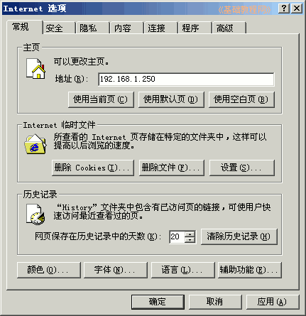

2011-2012 第二学期九年级系统安装教学设计
作者：TeliuTe 来源：基础教程网
七、学会设置程序 返回目录 下一课
（一）教学设计
1、学习目标：学会设置程序
2、注意事项：把设置系统和程序一起过了也行
3、教学过程：
1）教师准备学案和板书；
2）学生整队进入，开机抄黑板上笔记；
3）教师讲解板书演示操作；
4）学生打指法、日志、完成操作；
5）教师打勾记录学生指法成绩，检查日志和操作；
注：学生抄完笔记就开始打指法、日志，老师讲完后再继续完成；
（二）板书设计(学生笔记)
第7课 学会设置程序
1.下载安装火狐，flash的插件
2.设置火狐主页，标签，安全性
3.设置IE浏览器
4.设置桌面主题、背景
5.写一篇学习日志，收获和心得
操作指南(跟上边的板书对齐)
1.用完的关闭
2.工具-选项
3.工具-Internet 选项
4.右键-属性
5.从左到右
操作图示：

（三）课后记 2012-04-08 17:21
今天还得上课要，九年级的课
学习程序的设置，大约有四个任务操作
--
写日志 还是个问题，没养成习惯
要么就是抄，生气也解决不了问题
--
不能留太多时间 ，保持 合理的时间安排
学不会的也不用着急，盯着就是了
--
日志还是要登记下来，不过跟操作又重复了
找出缺陷来，及时补上
--
整体来看操作还是比较快，快慢不够均匀
快的要找些事情来填补多余的时间要不就乱了会
--
知识和操作分开写，光写知识不会操作
掌握方法从左到右，用完的用时关闭
--
女生的双击还有问题，要求多练习
不过 感觉都装满了，讲了也搞不清
--
2班的男生大课间跑操，教室里都是汗味
第一个班就是练习了，然后下一个班修正
--
1班的女生气质挺好的，如果持之以恒将来也挺好的
跟班主任有关吗，相辅相成教学相长，这条写得跑题了或者是有些偏心
-17:35-
上完3个班，还有一个到最后一节
这个班也可以，提前要求好把容易错的地方点一下
--
缺课的让自己补了，找个同学帮着讲
老师得照顾这节课，不再重复之前的知识
--
得让学生知道没有后悔药
错过了就得承担后果
--
黑板上一边是知识，一边是操作
操作步骤多容易迷糊，做完一个关一个，绕过弯来
返回目录 下一课
本教程由86团学校TeliuTe制作|著作权所有
基础教程网：http://teliute.org/
美丽的校园……
转载和引用本站内容，请保留作者和本站链接。